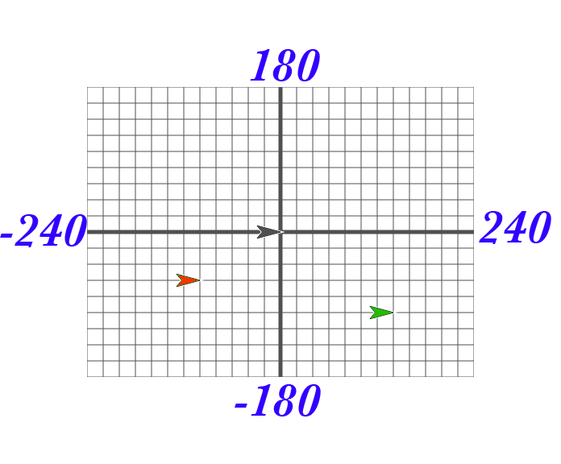

A sprite occupies a position (x,y) on the stage where x represents the horizontal position, from -240 (left) to 240 (right), and y represents the vertical position, from -180 (bottom) to 180 (top). Here's a picture:

The black sprite is at the center of the stage, called the origin, with coordinates (0, 0). The green sprite is to the right of the origin, so its x position is positive. The green sprite is also below the origin, so its y position is negative. Each grid line above represents 20 steps, so the green sprite's coordinates are (140, -100). Take some time to make sure you understand this; discuss it with a classmate.
Try this: What are the coordinates of the red sprite?
In your Snap! window, take a look at the blocks under the Motion tab. The majority of the blocks there will help you position your sprite on the stage. Try them and see what they do! Change the input values to see what happens.